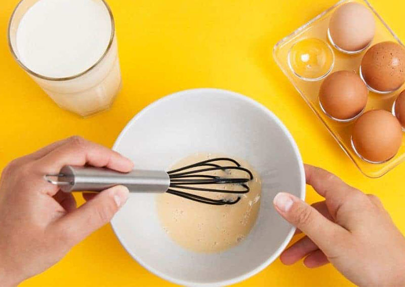
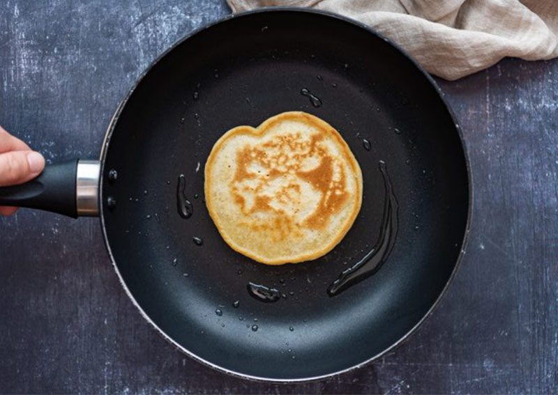

מתכון לפנקייק
רכיבים
- 1 כוס קמח
- 2 כפות סוכר
- קורט מלח
- 2 כפות שמן
- 1 כוס חלב
- 2 כפיות אבקת אפייה
- 2 כפיות תמצית וניל
- 1 ביצה

אופן ההכנה
- מערבבים את כל החומרים היבשים בתוך קערה
- יוצרים גומה ולתוכה מוסיפים את החלב, ביצה טרופה והשמן
- בוחשים בעזרת עף עץ עד שאין גושים וממתינים 5 דקות
- יוצקים את התערובת באמצעות מצקת קטנה או כף למחבת טפלון משומנת, משמנים קלות מידי פעםומטגנים על אש בינונית כדקה מכל צד

בתיאבון!